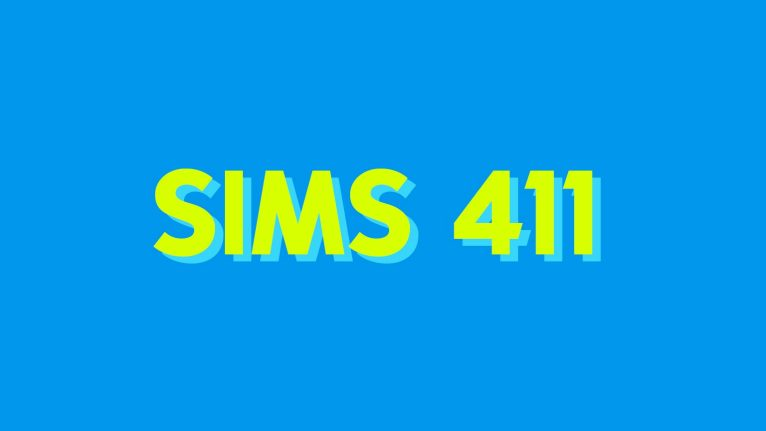

Electronic Arts Inc.
15-dic-2021
I client di Origin ed EA Desktop non sono stati colpiti dalla vulnerabilità...
Alla fine della scorsa settimana è stata resa nota una vulnerabilità estremamente grave nella sicurezza della popolare libreria di registrazione basata su Java "Log4j2" (CVE-2021-44228, alias "Log4Shell")

Electronic Arts Inc.
9-dic-2021
Riflettore sui SimGuru: le interviste di FreePlay
Rispondiamo alle tue domande mentre festeggiamo il nostro decimo compleanno!

The Sims™FreePlay
16-nov-2021
Aggiornamento Festa del decennale
Ti invitiamo a festeggiare il Natale ed il nostro 10mo compleanno con noi!
Electronic Arts Inc.
16-nov-2021
Condividiamo il nostro rapporto sull'impatto del 2021
I nostri impegni e progressi nella diversità, la creazione di community più sane, la sostenibilità e molto antro

Battlefield 2042
10-nov-2021
Briefing Batterfield: preparatevi all'uscita
Preparatevi all'uscita di Battlefield 2042
Electronic Arts Inc.
27-ott-2021
Rafforzare il nostro impegno in materia di accessibilità e inclusione
Per ispirare il mondo a giocare, dobbiamo creare storie, personaggi, esperienze e servizi che entrino in risonanza con tutti i giocatori

Electronic Arts Inc.
14-mag-2021
Gioca a Mass Effect™ Legendary Edition con EA Play* Pro
Vivi la saga cinematografica ora rimasterizzata e ottimizzata per il 4K Ultra HD

FIFA
3-mag-2021
Ottieni di più da FIFA 21 con EA Play - Sito ufficiale EA SPORTS
FIFA 21 è ora disponibile in The Play List con EA Play.
Electronic Arts Inc.
1-apr-2021
In evidenza su EA Play - Aprile 2021
Scopri le nuove ricompense e i giochi ora disponibili con il tuo abbonamento EA Play

Electronic Arts Inc.
18-mar-2021
EA Play è ora disponibile su Xbox Game Pass per PC tramite l'app EA Desktop
EA Desktop, la nostra piattaforma PC di nuova generazione, è in fase di open beta. Stiamo unendo le nostre forza con Xbox per offrire più giochi agli utenti PC
Electronic Arts Inc.
1-mar-2021
In evidenza su EA Play - Marzo 2021
Scopri le nuove ricompense e i giochi ora disponibili con il tuo abbonameto EA Play o EA Play Pro.
Electronic Arts Inc.
25-feb-2021
EA Play - Prossimamente in The Play List - Primavera 2021
Scopri tutto sui nuovi giochi in arrivo su EA Play o EA Play Pro.

FIFA
11-gen-2021
FIFA 22 | Note degli sviluppatori - Aggiornamento violazione account -EA S...
Aggiornamento sull'indagine riguardante i tentativi di violazione degli account FIFA, inclusi i provvedimenti adottati per aumentare le misure di sicurezza degli Account EA

FIFA
31-dic-2021
Protagonisti FUT 22 - FIFA 22 Ultimate Team - EA SPORTS
Celebra i giocatori più in forma del momento con i Protagonisti in FIFA 22 Ultimate Team!

FIFA
17-dic-2021
Jolly invernali FUT - FIFA 22 Ultimate Team - Sito ufficiale EA SPORTS
Presentazione dei Jolly invernali in FIFA 22 Ultimate Team!

FIFA
14-dic-2021
FIFA 22 | Note degli sviluppatori - Guida delle feste per giocatori nuovi e...
Sia che ti appresti a iniziare FIFA 22 durante le feste, sia che desideri solo rispolverare alcuni concetti, queste Note degli sviluppatori ti guideranno alla scoperta delle ultime novità dentro e fuori dal gioco.

FIFA
10-dic-2021
FUT Versus - FIFA 22 Ultimate Team - EA SPORTS
Ti diamo il benvenuto a FUT Versus in FIFA 22 Ultimate Team, dove i rivali in campo si scontreranno in una sfida epocale per decidere il migliore.

FIFA
3-dic-2021
Squadra della fase a gironi FUT - TOTGS FIFA 22 Ultimate Team - EA SPORTS
Scopri chi è entrato nella rosa della Squadra della fase a gironi e le relative valutazioni in FIFA 22 Ultimate Team
Apex Legends
6-gen-2022
Scopri Habitat e molto altro ancora nell'evento Abissi oscuri
Dall'11 gennaio all'1 febbraio esplora le profondità dei mari nell'evento Abissi oscuri. Goditi una nuova mappa, ricompense ed eventi flash!
Apex Legends
16-nov-2021
APEX LEGENDS | STORIE DI FRONTIERA: "GRIDIRON"
Guarda l'ultimo episodio della serie Storie di Frontiera: "Gridiron"
Apex Legends
16-dic-2021
Ruba la scena con il nuovo bundle di Prime Gaming per Loba
Riscatta la skin Oro rosa per Loba e molto altro dal 16 dicembre al 119 gennaio. E' gratis con Prime Gaming!

Apex Legends
6-dic-2021
Guida ai regali di Apex Legends 2021
Cerchi dei regali leggendari per le persone che ami? Dai un'occhiata alla guida ai regali di Apex Legends!

Apex Legends
3-dic-2021
AGLS - Aggiornamento playoff Fase 1
In linea con le nuove misure internazionali per contrastare la diffusione del coronavirus, la competizione passerà al formato online

Apex Legends
2-dic-2021
Conquista il Winter Express nell'evento collezione Predoni
Dal 7 al 21 dicembre, gioca in modalità Winter Express, colleziona gli oggetti cosmetici dell'evento e sblocca il cimelio di Wattson!

Battlfield 2042
8-dic-2021
AGGIORNAMENTO № 3.1 DI BATTLEFIELD™ 2042
Miglioramenti al bilanciamento dei veicoli, modifiche per le armi e ulteriori correzioni di bug.
Battlefield 2042
1-dic-2021
AGGIORNAMENTO № 3 DI BATTLEFIELD™ 2042
Correzione di ulteriori errori, modifiche al bilanciamento e miglioriamenti per l'esperienza di gioco
Battlefield 2042
24-nov-2021
AGGIORNAMENTO № 2 DI BATTLEFIELD 2042
Correzione di altri problemi critici e bilanciamento dopo l'uscita internazionale

Battlefield 2042
23-nov-2021
Briefing su Battlefield: aggiornamento di lancio e il futuro
Un aggiornamento sui nostri obiettivi per i prossimi mesi

Battlefield 2042
17-nov-2021
Aggiornamento n°1 di Battlefield 2042
Risolvere problemi critici prima dell'uscita internazionale

Battlefield 2042
10-nov-2021
Briefing Battlefield: preparatevi all'uscita
Preparatevi all'uscita di Battlefield 2042

The Sims 4
1-dic-2021
Trovate i tanti voi stessi in The Sims™ con Bretman Rock
Trovate voi stessi e siate voi stessi, fino in fondo

The Sims 4
30-nov-2021

Aggiornamento: 30/11/2021
E' il momento più magico... per un aggiornamento del gioco!
The Sims 4
24-nov-2021
Riepilogo delle novità di The Sims
Dentro Maxis - 23/11/2021

The Sims 4
23-nov-2021
Blog delle storie di quartiere di The Sims™ 4
Infondere nuova vita nel quartiere
The Sims 4
17-nov-2021
Ridefinire i classici londinesi
Scopri nuovi stili con The Sims 4 Modern Menswear Kit

The Sims 4
16-nov-2021
Cose da fare - 16 novembre 2021
Cose da fare.

F1® 2021
12-gen-2022
F1® 2021 - Aggiornamento finale delle valutazioni dei piloti
Dopo 22 gare di strabiliante azione, è il momento di aggiornare le valutazioni dei piloti di F1® 2021 per l'ultima volta
F1® 2021
10-dic-2021
F1® 2021 - Previsione del risultato della gara finale
Scopri quale dei due aspiranti al titolo avrà la meglio durante la simulazione della gara finale a Yas Marina in F1® 2021.

F1® 2021
6-dic-2021
F1® 2021 - Aggiornamento delle valutazioni dei piloti
E' il momento di aggiornare le valutazioni dei piloti mentre ci avviciniamo al rush finale del campionato
F1® 2021
6-dic-2021
F1® 2021 - Aggiornamento F2™ 2021
Prova le squadre, la auto e i piloti della stagione 2021 di F2TM nel nostro aggiornamento gratuito

F1® 2021
6-dic-2021
F1® 2021 - Note sulla patch 1.14
Scopri di più sull'ultima patch

F1® 2021
17-nov-2021
Pass Podio Serie 3: una serie molto speciale
Gareggia con stile con gli oggetti ideati da Daniel Ricciardo e George Russel
Inside EA
13-gen-2022
Firemonkeys Studio di EA festeggia i 10 anni di The Sims FreePlay
Tutto è cominciato realizzando The Sims per dispositivi mobili: da allora è diventato uno dei titoli preferiti della serie

Inside EA
16-dic-2021
Dentro Full Circle – Melvin Teo, produttore di skate.
Scopri di più sullo studio Full Circle con melvin Teo, produttore di skate.
Inside EA
2-nov-2021
ABLE festeggia il mese nazionale di sensibilizzazione sull'occupazione per …
E' il momento di educare sui problemi di handicap e celebrare i numerosi e variegati contributi dei lavoratori con disabilità

Inside EA
27-ott-2021
Rafforzare il nostro impegno in materia di accessibilità e inclusione
Per ispirare il mondo a giocare, dobbiamo creare storie, personaggi, esperienze e servizi che entrino in risonanza con tutti i giocatori

Inside EA
15-ott-2021
Juntos: Insieme più forti
Festeggiamo e supportiamo i dipendenti e i giocatori EA ispanici/latini

Inside EA
25-ago-2021
I nostri brevetti a favore del gioco positivo
Annunciamo un nuovo impegno in materia di brevetti, con l'obbiettivo di condividere alcune delle tecnologie più innovative.